A bilingual ASP.NET Core MVC application engineered for the Saudi market — double-entry ledger, perpetual inventory, ZATCA-aware invoicing, role-based identity, and a dedicated Reports Center, all on a single codebase with a unified design system.
Bestgen is a premium Arabic SaaS accounting + inventory web application targeted at Saudi small and mid-sized enterprises. The product replaces fragmented spreadsheets and entry-level point-of-sale tools with a single, cohesive system that handles the entire commercial cycle — from quotation through delivery, invoicing, collection, and posting to the general ledger — with full Arabic-first UX and ZATCA-aware invoicing primitives.
Every business document automatically posts a balanced journal: every debit has a matching credit, validated before save.
Sales, purchases, transfers, and counts mutate stock through an audited StockMovement trail.
RTL layout, native Arabic typography, bilingual labels, and locale-aware money/dates.
9 built-in roles (Owner, Admin, Accountant, Sales, Purchases, Warehouse, HR, Cashier, Viewer) wired to ASP.NET Core Identity.
13 reports backed by real ledger queries — Trial Balance, P&L, Balance Sheet, aging, VAT return, customer/supplier statements, and more.
Master tables share a single generic CrudController<T> + Razor templates — adding an entity is a 5-line affair.
net8.0)Nullable and ImplicitUsings enabledbestgen (lowercase) · assembly name Bestgenbestgen.db at the project rootEnsureCreatedAsync() at boot — schema regenerates if the file is deleteddecimal(18,2) precision configured for every monetary fieldbootstrap.rtl.min.css) for layout primitiveswwwroot/css/site.cssApplicationUserRoleManager[Authorize] default on every CRUD controller[ValidateAntiForgeryToken] on every POSTdotnet clean
dotnet restore
dotnet build
dotnet run # listens on http://localhost:5000 by default| Password | Roles | Notes | |
|---|---|---|---|
max@bestgen.com | 123 | Owner, Admin | Primary developer login |
admin@ledgerflow.local | Admin@12345 | Owner, Admin | Legacy login |
The seeder calls ResetPasswordAsync on every run, so the credentials remain valid even after the password rules are tightened.
EnsureCreatedAsync(). When you change an entity, delete bestgen.db and re-run — the schema is recreated from the model on the next boot. Suitable for rapid iteration; needs to be replaced with EF migrations before going to production with real customer data.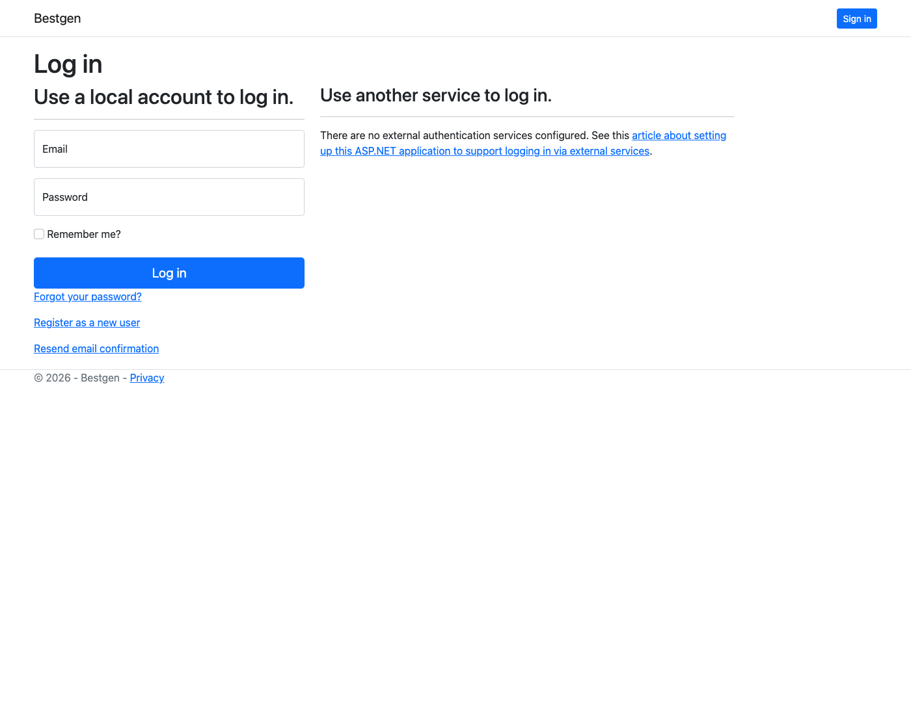
CrudController<TEntity> handles index/create/edit/delete for ~30 simple modules; only Sales/Purchase invoices, Journal Entries, Reports, and Settings have hand-rolled controllers.ReportService.RunAsync(key, filters) returns a generic ReportResult structure rendered by a single Razor view.DbContext writing to SQLite. Decimal precision, enum-to-string conversions, unique indexes, and FK delete behaviors are configured in OnModelCreating.Every transaction module that mutates the ledger or stock follows the same three-step lifecycle, exposed through hooks on CrudController:
| Hook | When it fires | Service contract |
|---|---|---|
BeforeCreateSaveAsync | Before the row is added to the change tracker | service.PrepareAsync(entity) — generate document number, default missing fields |
AfterAddBeforeSaveAsync | After the row is added but before SaveChanges | service.PostAsync(entity) — append journal lines, append stock movements |
AfterSaveAsync(entity, isCreate) | After SaveChanges returns the new id | service.ApplyAsync(entity) — recalc party balance, stamp links that need the id |
This pattern means every transaction is atomic: either the source document, the journal entry, the stock movement, and the party balance recalculation all commit together, or nothing does.
The UI is intentionally restrained: a calm, premium palette built around a navy-and-emerald accent system, generous whitespace, and a strict typographic scale. Nothing is borrowed from competing accounting products.
_PageHeader partial: title + description + optional CTA..metrics-grid), data panel for tables, form panel for create/edit, details panel for read-only views, report grid for the Reports Center.Title, description, optional create button. Top of every page.
KPI cards with sparkline and delta vs. last month.
Colored badge resolved via EntityDisplayHelper.StatusClass.
List-view filter — search + status + apply.
Friendly message when a list/index has no rows.
View / Edit / Delete trio with anti-forgery on delete.
Every view begins with CultureInfo.CurrentUICulture; a tiny inline T(en, ar) helper picks the right string. Entity field labels, module titles, status enum translations, and report column headers all live in Helpers/EntityDisplayHelper.cs as bilingual dictionaries — adding a new language requires only an extra dictionary, not new views.
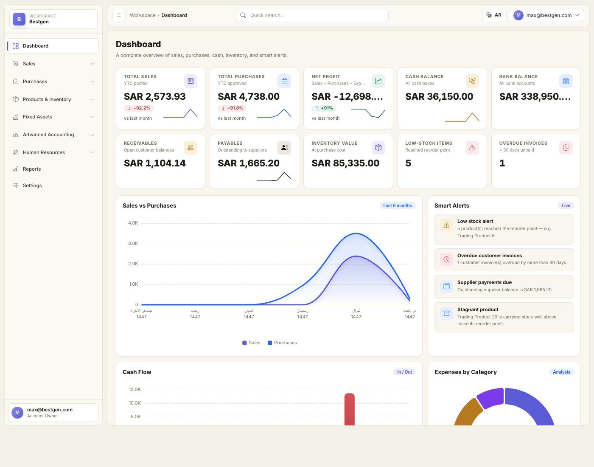
DashboardService from live ledger and inventory data.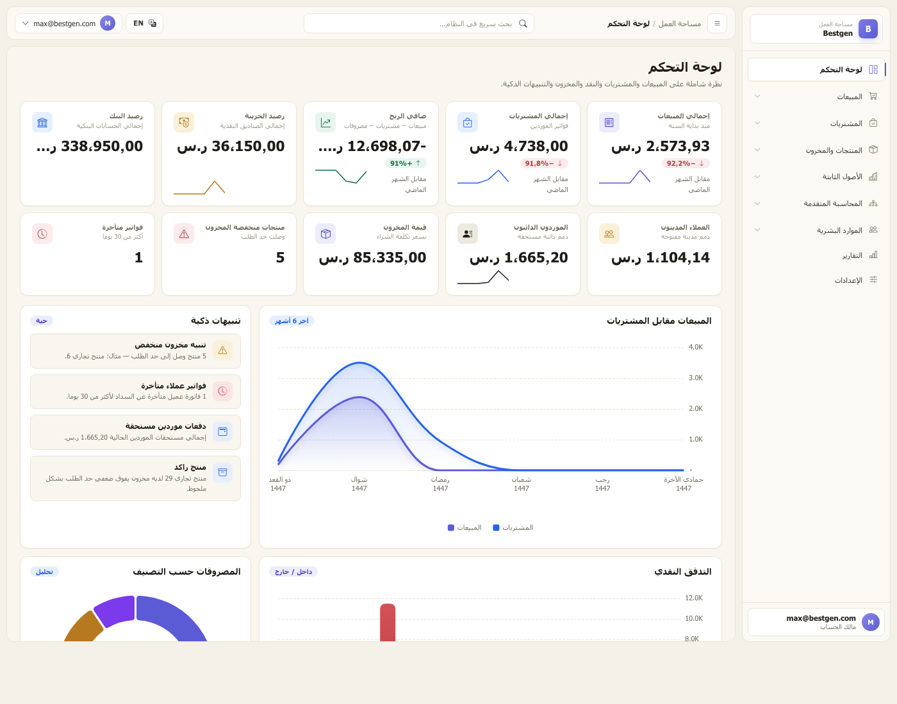
The backend is service-oriented. Controllers stay thin and delegate to a dedicated service per transaction type. The services share a small cluster of foundation primitives that every business operation routes through.
| Service | Responsibility |
|---|---|
ChartOfAccounts | Single source of truth for canonical account codes (Cash 1000, AR 1100, Inventory 1200, AP 2000, VAT 2100/2110, Sales 4000, COGS 5000, …). Throws MissingAccountException if a required code is absent. |
StockMovementService | The only path that mutates stock. Writes paired audit rows with sign convention positive = inbound, negative = outbound and a typed reference (EntityName:Id). |
AccountingService | Builds and validates journal entries. BuildAndAddEntryAsync(date, sourceModule, description, lines) validates that debits = credits and adds the entry to the change tracker. |
PartyBalanceService | Recomputes Customer.CurrentBalance / Supplier.CurrentBalance from the primary documents — invoices minus receipts, credits, refunds, plus opening balance. |
InvoiceCalculationService | Front-and-back recalculation of invoice subtotal, discount, VAT, and grand total — used by both Sales and Purchase invoices and validated server-side after the form posts. |
DocumentNumberingService | Per-document numbering with format strings ({prefix}-{yyyy}-{0000}), annual reset, current sequence persistence. |
SalesInvoiceService — DR AR, CR Sales + VAT, plus COGS/Inventory pairSalesReceiptService — DR Cash/Bank, CR ARSalesRefundReceiptService — DR Sales Returns, CR Cash/BankCreditNoteService — DR Sales Returns + VAT-Out, CR ARDeliveryNoteService — number generation only (stock stays on the invoice flow)PurchaseInvoiceService — DR Inventory + VAT-In, CR APSupplierPaymentService — DR AP, CR Cash/BankPurchaseRefundReceiptService — DR Cash/Bank, CR Purchase ReturnsDebitNoteService — DR AP, CR Purchase Returns + VAT-InGoodsReceiptService — number generation onlyStockTransferService — paired stock movements, no GL impactInventoryCountService — variance posted to 5800 Inventory VarianceOpeningBalanceService — bootstraps the books against 3200 Opening Balance EquityPayrollService · EmployeeBonusService · EmployeeDeductionServiceEmployeeLoanService — DR AR-Employees, CR Cash on disbursementEmployeeReceiptService — DR Salaries Payable, CR CashFixedAssetService — DR Fixed Assets, CR Cash on acquisitionAssetRentalService — number generation (recurring revenue deferred)The right-side sidebar groups every module into nine canonical sections. Every link resolves to a working page — empty modules render a polished empty-state, never a 404.
DashboardService.Ready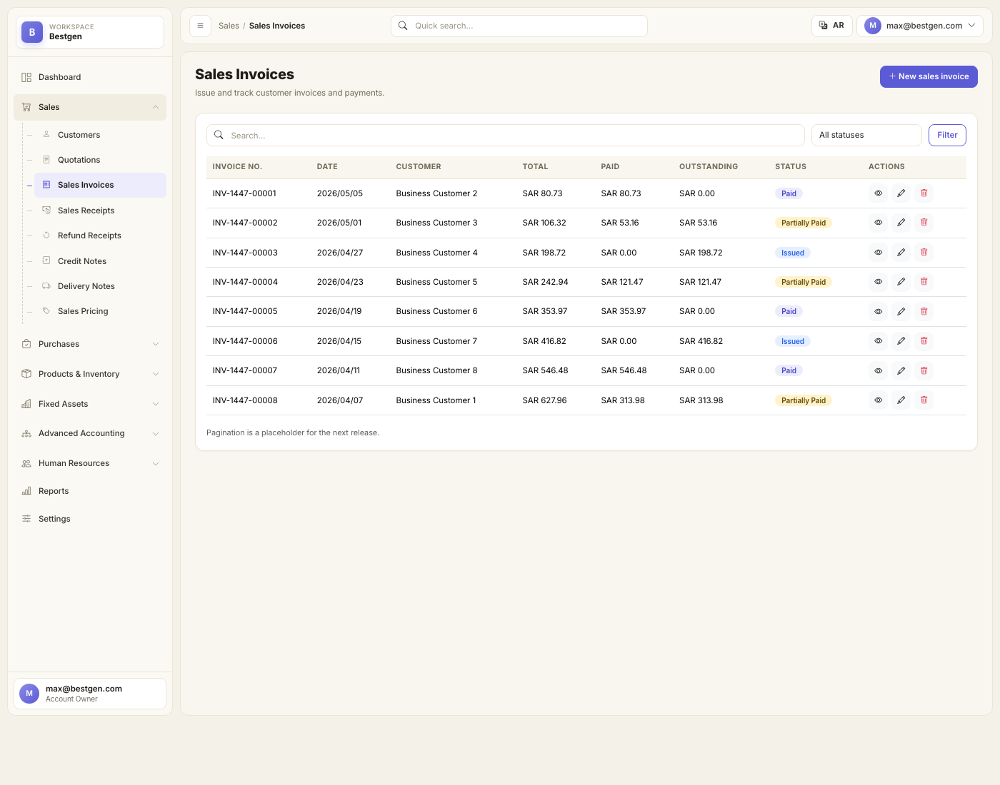
_SearchBar on top and _ActionButtons per row.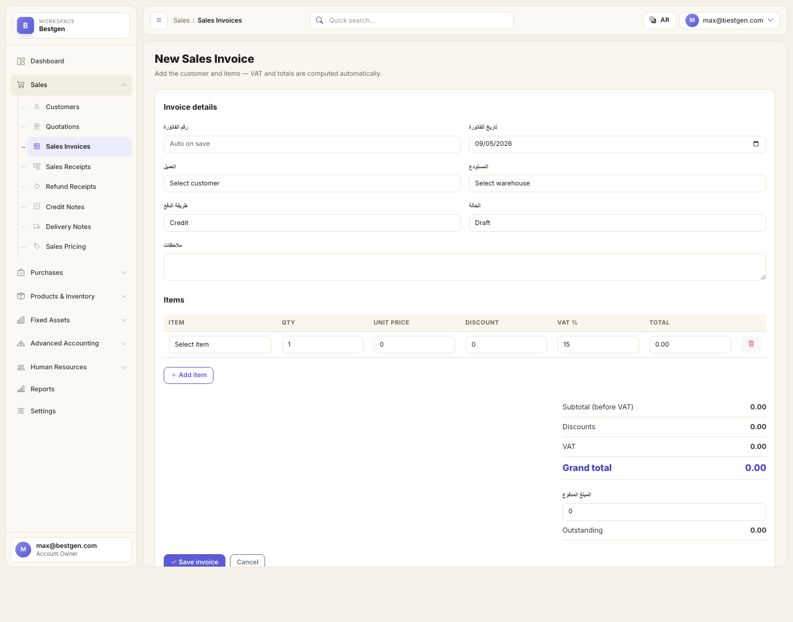
SalesInvoicesController.Create, which delegates to SalesInvoiceService for calc + stock + journal in a single transaction.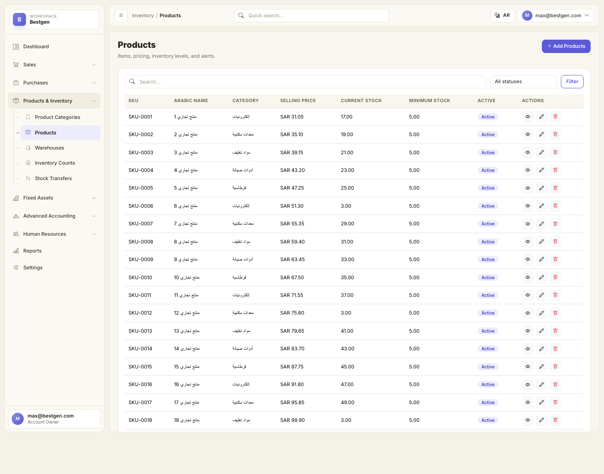
CrudController<T>.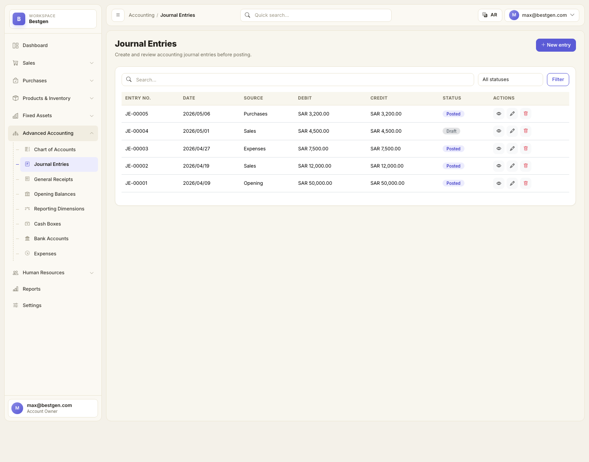
JournalEntryService, which validates that debits = credits before saving.The Reports Center replaces what used to be 26 placeholder cards with a dispatcher pattern: ReportService.RunAsync(string key, ReportFilters) returns a generic ReportResult rendered by a single Razor view (Views/Reports/Details.cshtml). Adding a new report is a switch-case + a new method.
Account-by-account journal lines with running balance over the chosen period.
Sum of debits and credits per account; verification that the books are balanced.
Revenue minus expenses for any period.
Point-in-time assets vs. liabilities & equity, including current-period net income flowing into retained.
Movement & balance for any single account.
Receipt and payment vouchers grouped by category.
Document-level history with running balance per party.
Snapshot of all party balances.
0–30 / 31–60 / 61–90 / 91–120 / 120+ buckets.
Per-warehouse on-hand quantity and valuation.
Audit trail of every quantity change.
Output VAT − input VAT, with credit/debit note adjustments.
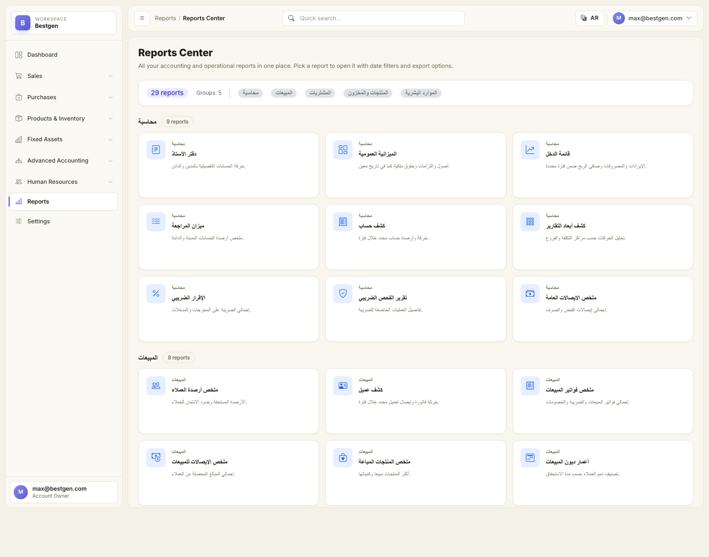
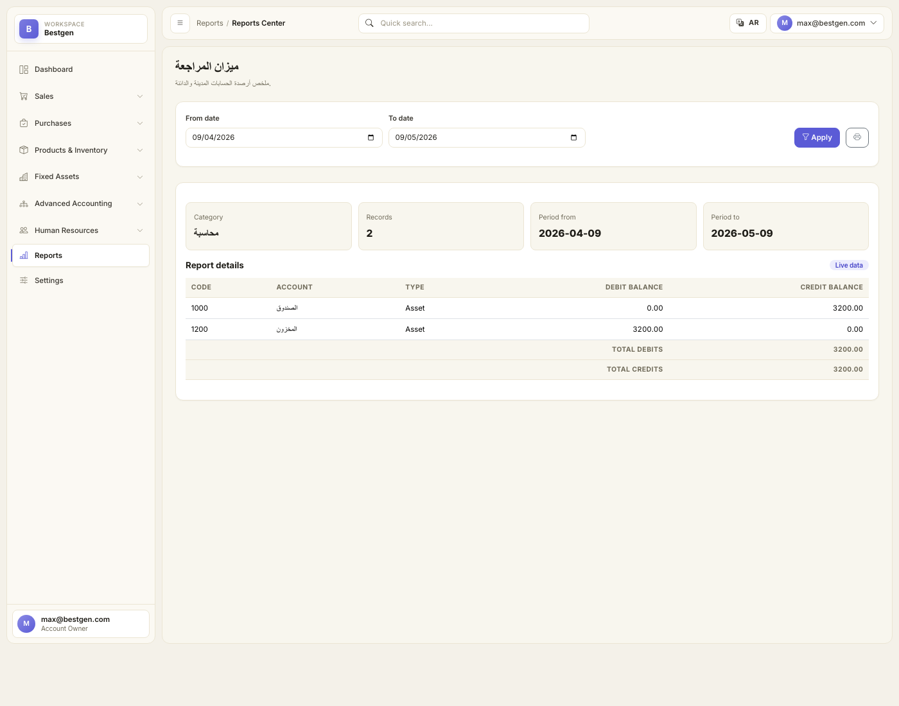
ReportFilters; the column/row/total shape is universal across reports.Settings is split into eight dedicated screens, each backed by a real form (no placeholders left).
| Page | What it controls |
|---|---|
| Company profile | Names (AR/EN), VAT number, commercial registration, address, country, default VAT rate, invoice prefixes, logo upload. |
| Tax settings | Default VAT rate, VAT number, ZATCA enable flag, ZATCA taxpayer ID, invoice QR toggle. |
| Invoice settings | Sales/purchase invoice prefixes, AR/EN footer text, QR display toggle. |
| Currency settings | Base ISO currency code (default SAR) and display symbol. |
| Numbering settings | List of NumberingPolicy rows — one per document type, with prefix, format pattern, current sequence, annual-reset flag. |
| Branches | Branch CRUD (code, AR/EN name, city, address, phone, manager, active flag). Wired into the generic CRUD framework. |
| Users & permissions | Identity-backed CRUD: list users with role badges and lock state, create user with role assignment, edit user (rename / change roles / reset password), delete user. |
| Future integrations | Roadmap card grid: payment gateways, bank reconciliation, WhatsApp Business, ZATCA Phase 2, delivery providers, transactional email. |
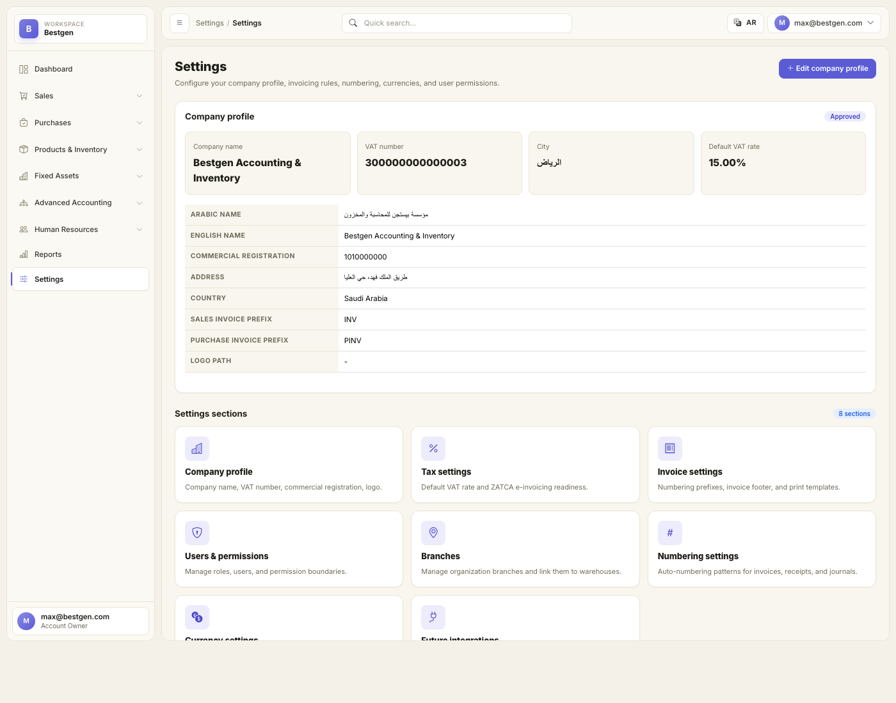
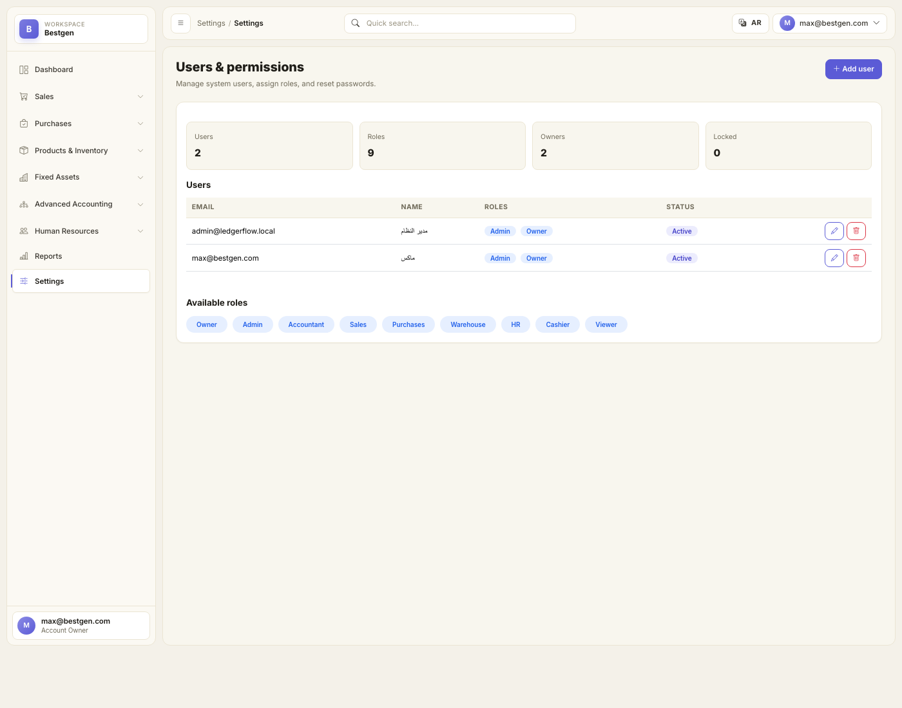
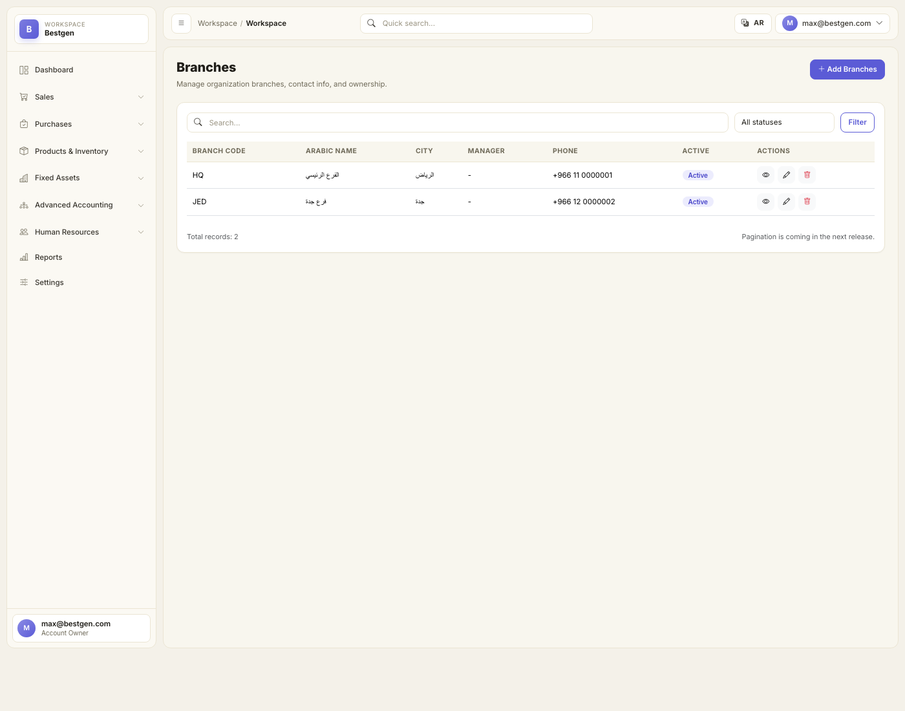
CrudController<Branch> — no controller code needed beyond the 5-line subclass.Customer · Supplier · Product · ProductCategory · Warehouse · Employee · AssetTag · Branch.
SalesQuotation(+Items) · SalesInvoice(+Items) · SalesReceipt · SalesRefundReceipt · CreditNote · DeliveryNote(+Items) · SalesPricePolicy.
PurchaseOrder(+Items) · PurchaseInvoice(+Items) · SupplierPayment · PurchaseRefundReceipt · DebitNote · GoodsReceipt(+Items) · PurchasePricePolicy.
InventoryCount(+Items) · StockTransfer(+Items) · StockMovement (audit trail).
Account · JournalEntry(+Lines) · GeneralReceipt · OpeningBalance · ReportingDimension.
Employee · EmployeeDocument · PayrollEntry · EmployeeDeduction · EmployeeBonus · EmployeeLoan · EmployeeReceipt · EmployeeRequest.
FixedAsset · AssetRental · AssetTag.
CashBox · BankAccount · Expense.
CompanySettings · Branch · NumberingPolicy.
| Code | Account | Type | Used by |
|---|---|---|---|
| 1000 | Cash | Asset | All cash settlements |
| 1010 | Bank | Asset | All bank settlements |
| 1100 | Accounts Receivable | Asset | Sales invoices, receipts, credit notes |
| 1110 | AR – Employees | Asset | Employee loans |
| 1200 | Inventory | Asset | Stock-bearing flows (purchase, sale, transfer, count) |
| 1500 | Fixed Assets | Asset | Asset acquisition |
| 1510 | Accumulated Depreciation | Contra-asset | Reserved — depreciation runner pending |
| 2000 | Accounts Payable | Liability | Purchase invoices, payments, debit notes |
| 2100 | VAT Output | Liability | Sales VAT |
| 2110 | VAT Input | Asset | Purchase VAT |
| 2200 | Salaries Payable | Liability | Approved-but-unpaid payroll |
| 2220 | Loans Payable | Liability | Reserved |
| 2230 | Goods Received Not Invoiced | Liability | Reserved for goods-receipt clearing |
| 2300 | Customer Advances | Liability | Reserved |
| 3000 | Equity | Equity | — |
| 3100 | Retained Earnings | Equity | Balance sheet rollover |
| 3200 | Opening Balance Equity | Equity | OpeningBalance bootstrap |
| 4000 | Sales Revenue | Revenue | Sales invoices |
| 4100 | Service Revenue | Revenue | Reserved |
| 4200 | Asset Rental Revenue | Revenue | AssetRental |
| 4900 | Sales Returns | Contra-revenue | Refunds, credit notes |
| 5000 | COGS | Expense | Sales invoices |
| 5100 | Rent Expense | Expense | Recurring expenses |
| 5200 | Salary Expense | Expense | Payroll |
| 5210 | Bonus Expense | Expense | Bonuses |
| 5300 | Utilities Expense | Expense | Recurring expenses |
| 5400 | Misc Expense | Expense | Misc paid expenses |
| 5700 | Depreciation Expense | Expense | Reserved |
| 5800 | Inventory Variance | Expense | Inventory count adjustments |
| 5900 | Purchase Returns | Contra-expense | Refunds, debit notes |
Bestgen has shipped through Phase 8 of the original 10-phase production plan. Phases 0 through 8 are complete and verified by smoke tests. Phases 9 and 10 are queued.
StockMovement audit trail · ChartOfAccounts resolver · PartyBalanceService · BuildAndAddEntryAsync shared posting helper · 28 chart-of-account codes seeded.
SalesReceipts · SalesRefundReceipts · CreditNotes · DeliveryNotes — all post balanced journals; party balances recalculate on save.
SupplierPayments · PurchaseRefundReceipts · DebitNotes · GoodsReceipts — symmetric to the sales side.
StockTransfers (paired movements) · InventoryCounts (variance posted) · OpeningBalances (bootstraps the books).
JournalEntryService extracted from the controller · GeneralReceiptService with cash-account rebalancing · period-lock hook in place.
Payroll · Bonus · Deduction · Loan · EmployeeReceipt — all five flows post to the ledger with the right cash / payable split based on status.
FixedAssetService.PostAcquisitionAsync books the asset; AssetRentalService generates rental numbers. Recurring rental revenue and monthly depreciation are queued for Phase 9.
Dispatcher pattern · 13 live reports · single Razor renderer · date filter wiring · placeholder fallback for the long-tail reports.
Real Tax / Invoice / Currency / Numbering / Branches forms · Identity Users CRUD · DocumentNumberingService · 8 default NumberingPolicy rows seeded · 2 default branches seeded · logo upload.
Program.cs (post-seed ResetPasswordAsync keeps dev login alive).[Authorize(Roles = "...")] on every controller per the role matrix.[Timestamp] byte[] RowVersion on financial entities for optimistic concurrency.ServiceResult<T> with validation error list returned to controllers.CreatedBy / UpdatedBy audit log via SaveChangesInterceptor.CompanySettings.LockedThrough.MonthEndService hosted job for depreciation runs and aging snapshots.tests/Bestgen.Tests/ with EF Core in-memory provider.IsBalanced rejects unbalanced journals, every report against a seeded fixture.tests/SMOKE.md 30-minute click-through manual checklist before each release.EnsureCreatedAsync; should be replaced with proper migrations before going to production with real customer data.dotnet restore.dotnet run — the seeder creates the SQLite file, seeds 9 roles, 28 accounts, 2 admin users, 2 branches, 8 numbering policies, plus demo data.http://localhost:5000 and sign in with max@bestgen.com / 123.| Pitfall | Built-in guard |
|---|---|
| Unbalanced journal | AccountingService.BuildAndAddEntryAsync throws if debits ≠ credits. |
| Missing chart-of-account code | ChartOfAccounts.ResolveAsync throws MissingAccountException. |
| Stock mutation outside the audit trail | Nothing else writes to Product.CurrentStock — every change goes through StockMovementService. |
| Stale party balance | PartyBalanceService.RecalculateCustomer/SupplierAsync recomputes from primary docs after every relevant save. |
| Duplicate document number | Unique indexes on every numbered document type — saved at OnModelCreating. |
In one sentence: Bestgen is a complete, bilingual accounting and inventory product engineered for Saudi small and mid-sized businesses. It solves three problems at once that owners face daily — scattered books across Excel sheets, no clear visibility into actual warehouse stock, and the time lost preparing tax and financial reports — by replacing them with one cohesive system that ships with proper double-entry accounting from day one.
Runs the full business cycle: issues quotations, posts invoices, records payments, deducts stock, and writes the journal entry to the general ledger — all in a single save.
The UI is Arabic-native, not translated. The ledger is properly double-entry. Reports query the live database — no mocked figures. Identity and roles are built in from day one.
The bookkeeper, the warehouse manager, the sales clerk, the purchasing officer, and the HR clerk in a small or mid-sized company — each finds their section ready in the sidebar.
9 sidebar sections complete. 9 roles. 28 chart-of-account codes. 13 live reports. ~70 entities in the database. 8 of 10 production-plan phases shipped.
Three clusters of work: tighten password rules and per-controller role gates, add the period-lock guard, and write the automated test suite. Then replace EnsureCreatedAsync with proper EF migrations before the first real customer.
Today, for in-house or private-server use. After Phases 9 and 10, it's ready for commercial release on real customer tenants.
© Bestgen — Project documentation generated from the live source tree on 2026-05-09.